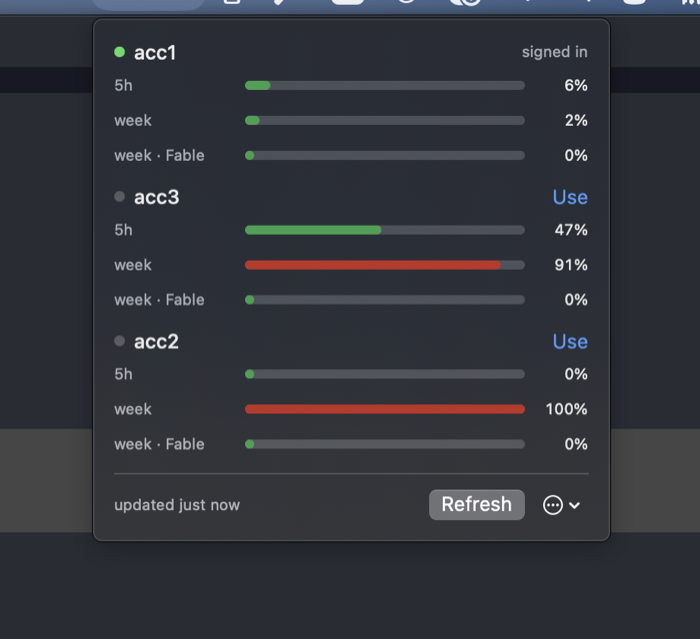

Switch between your own Claude Code logins, and see how much each one has left.
If you have more than one Claude subscription, changing accounts normally means signing out and back in through a browser. pitboard keeps a copy of each login and puts the one you ask for where Claude Code reads it. Your history, sessions, settings and projects stay where they are. Only the account changes.

brew install datlechin/tap/pitboard # the command line brew install --cask datlechin/tap/pitboard # the menu bar app
Or cargo install pitboard, or cargo binstall pitboard to
fetch the built binary. The app needs macOS 14 or later. To remove it all,
pitboard uninstall deletes every parked login and pitboard's own files.
pitboard enroll personal pitboard enroll work --sign-in pitboard # who is signed in, and what each account has left pitboard use work # switch
A Claude Code session that is already open picks up the switch within about 33 seconds. You do not have to restart it.
On macOS each parked login is a keychain item of its own, read and written only through
/usr/bin/security, the one program the item's access list trusts. Nothing
is sent anywhere except to Anthropic: which account a login belongs to, and what it has
left. There is no telemetry.
SECURITY.md
is the full inventory of what pitboard writes and what it defends against.
Pre-release. macOS is tested; on Linux it builds and its tests pass, but how Claude Code stores its login there has not been checked on a real signed-in install.